Презентація до захисту магістерської дипломної роботи на тему
"Організація маркетингової діяльності"
на базі ТОВ "Ай Ті Дрім Сервіс"
Студента: спец 8507
Атланова Євгенія Костянтиновича
Актуальність роботи
В умовах сучасної економічної ситуації в Україні, ринок ІТ зазнав жорсткого спаду, саме тому для виживання підприємств таких як ТОВ “Ай Ті Дрім Сервіс” – потрібно проводити заходи по оптимізації діяльності та збільшенню прибутковості, що в результаті призведе до вирівнювання ринку, та його росту в перспективі.
Об'єктом дослідження - є суспільні відносини, що виникають, змінюються та припиняються в процесі організації маркетингової діяльності.
Предметом дослідження - є організація маркетингової діяльності в ТОВ “IT DREAM SERVICE”.
Мета дипломної роботи: розробка рекомендацій щодо підвищення прибутковості ТОВ „Ай Ті Дрім Сервіс” в умовах конкурентного середовища та чинного законодавства України.
Завдання відповідно до мети:
- − вивчити основні складові маркетингової інформаційної системи, стратегії та концепції;
- − охарактеризувати маделі та алгоритмі оргназіції маркетингової діяльності;
- − детально проаналізувати стан маркетингової діяльності на підприємтсві ТОВ “Ай Ті Дрім Сервіс”;
- − охарактеризувати стратегії підприємства, цінову та коммунікаційну політику;
- − дослідити ринок на якому працює ТОВ “Ай Ті Дрім Сервіс”;
- − спрогнозувати зміни на ринку, та створити інвестиційний проект для презентації нової послуги;
- − дати рекомендації щодо підвищення прибутковості компанії.
Частина 1: ТОВ "Ай Ті Дрім Сервіс"
Основними напрями діяльності компанії є:
- − Обслуговування комп'ютерної техніки «IT Outsourcing»
- − Розробка програмного забезпечення
- − Інтеграція Систем управління бізнесом
- − Інтеграція Систем управління доступом
- − Інтеграція Систем відеоспостереження
- − Інтеграція Структурованих кабельних систем
- − Інтеграція Автоматичних телефонних станцій
- − Послуги сервісного центру
- − Консультування у сфері інформаційних технологій
- − Аудит інформаційних систем (IT Audit)
Організаційна структура

Динаміка витрат за звітом
про фінансові результати
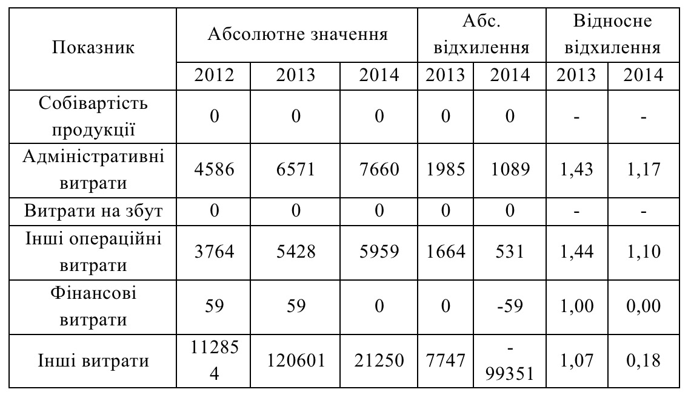
Питома вага витрат за звітом
про фінансові результати
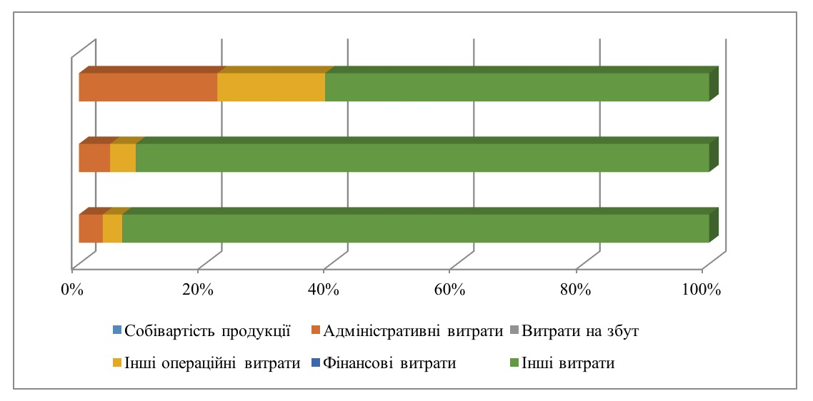
Структура доходів товариства
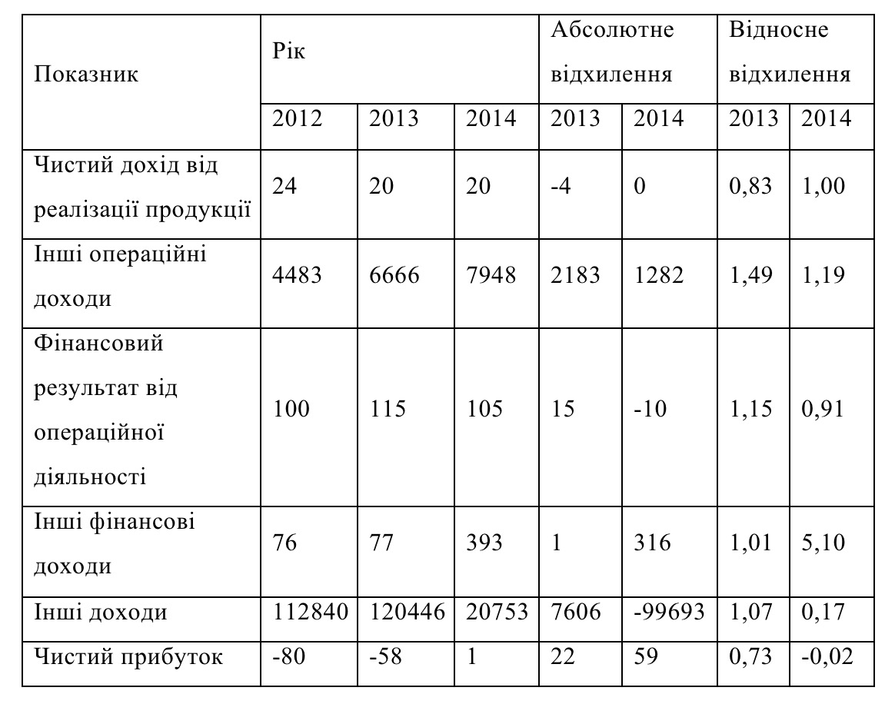
Динаміка чистого прибутку
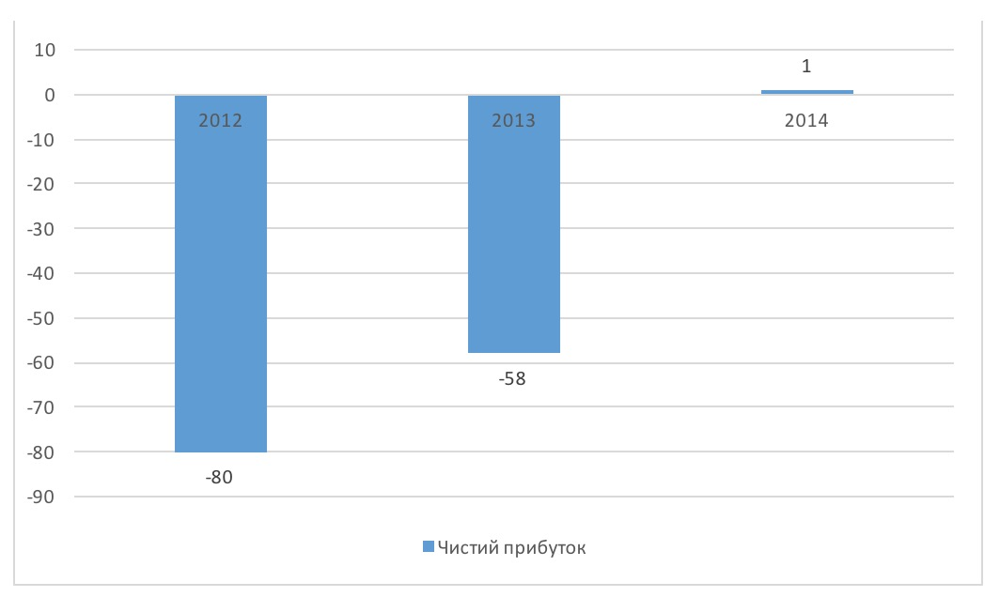
Основні фінансові показники
діяльності підприємства
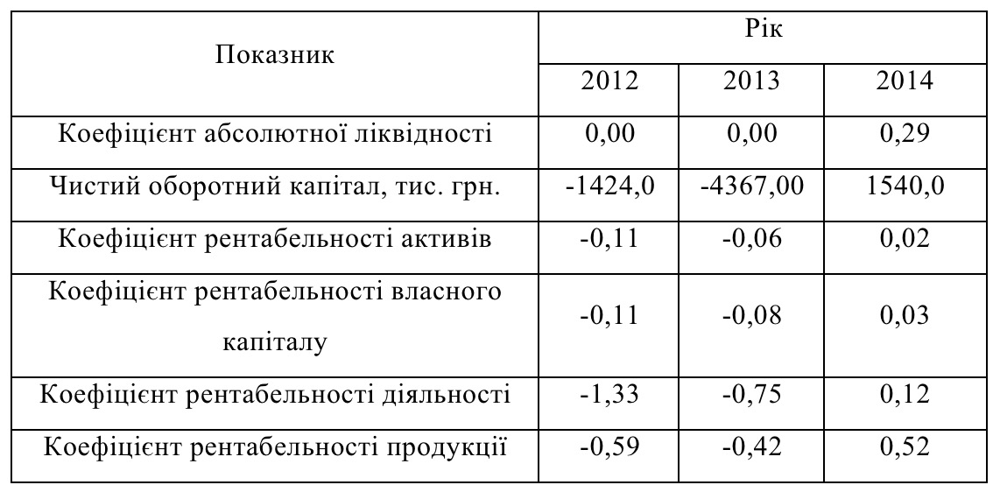
Аналіз рентабельності товариства
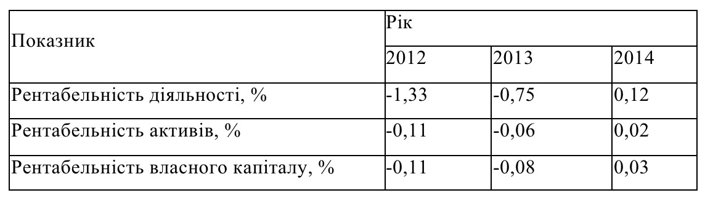
Частина 2: Вирішення завдання 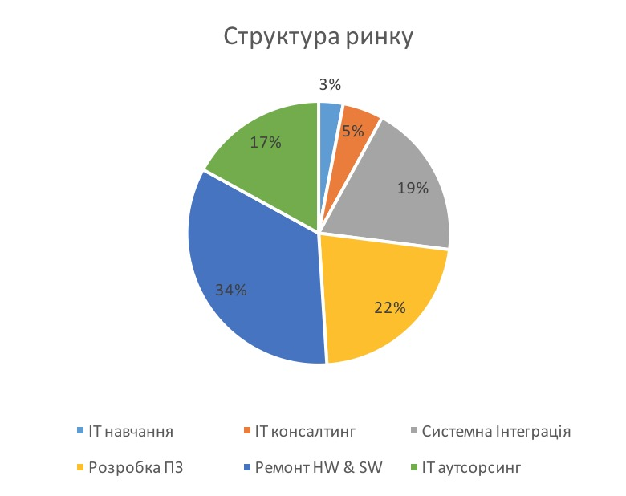
Динаміка ІТ ринку
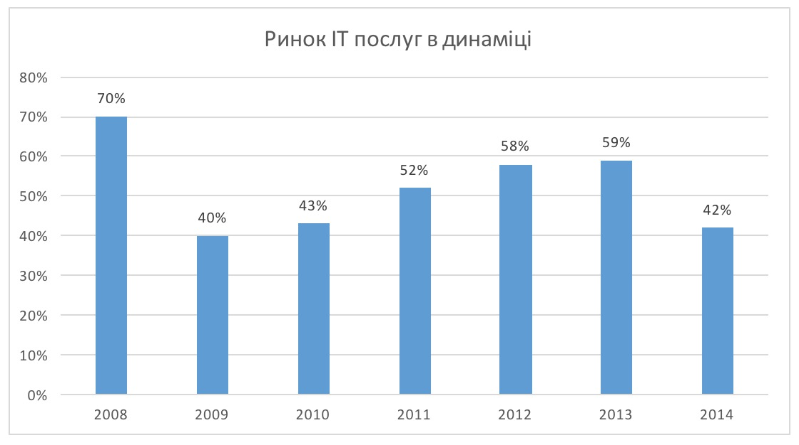
Динаміка ринку ЕCM систем в Україні
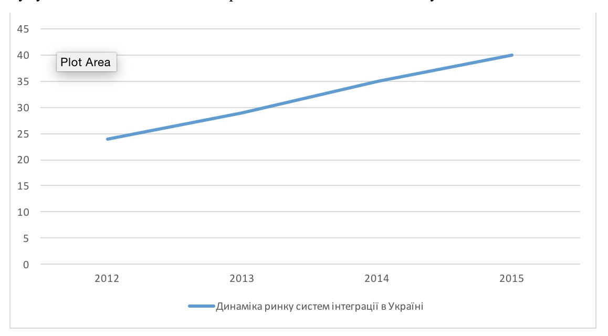
Вага компонентів
в загальному функціоналі ECM
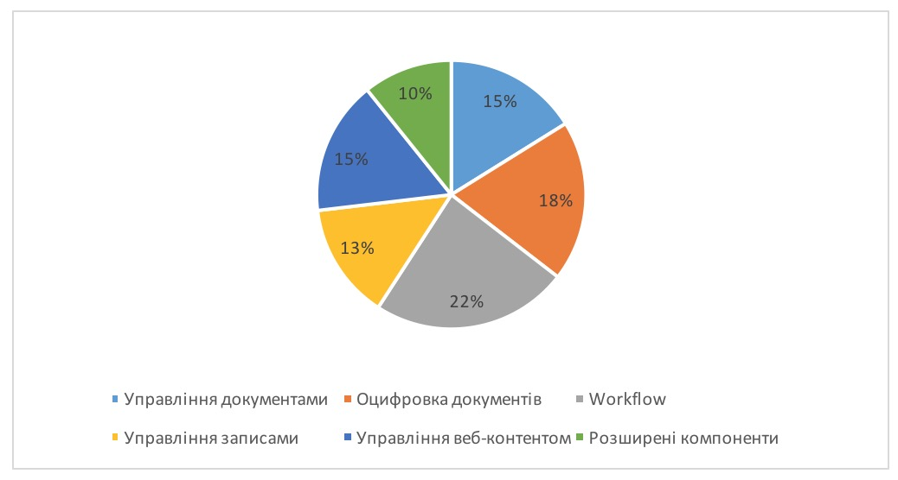
Цільова аудиторія
З точки зору компанії, як суб'єкта що надає послуги з інтеграції систем документообороту – цільовою аудиторією для ІТ Дрім Сервіс – є малий, середній та великий бізнес.За сегментами їх можна класифікувати як:
- − Державний сектор;
- − Комерційні організації;
- − Будівничі компанії;
- − Важка промисловість;
- − Легка промисловість;
- − Енергетика;
- − Охорона здоров'я;
- − Туризм;
- − Консалтинг.
Аналіз систем
- 1) 1с. Документооборот
- 2) Docvision
- 3) Directum
- 4) Тезис
Конкуренти
- 1) Lan Service
- 2) TerraSoft
- 3) GSA Soft
- 4) «Галактика»
Основна модель нової ніші
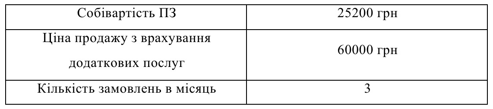
Нові постійні та змінні витрати
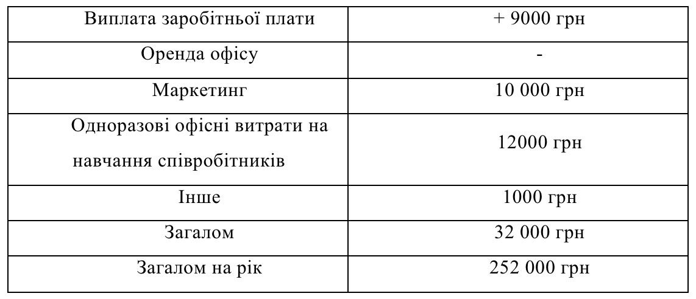
Цільове призначення інвестицій
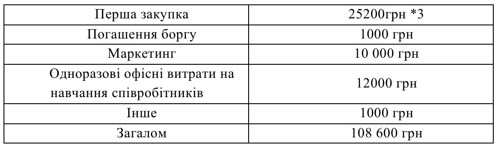
Бізнес план
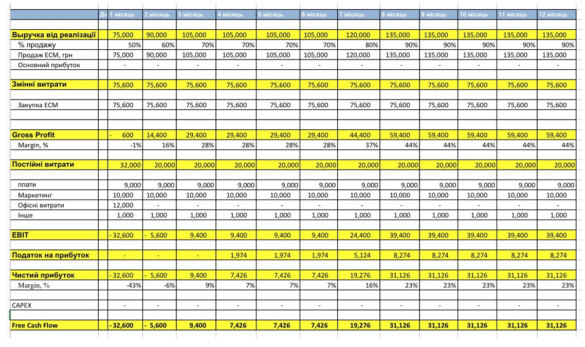
Фінансові показники діяльності
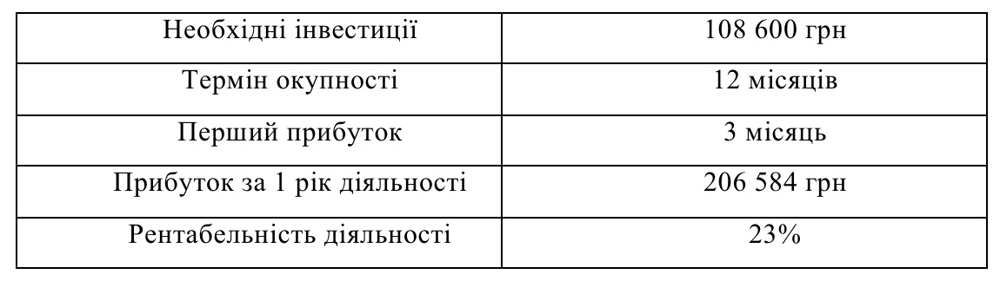
Додаткова рекомендація: Медіа план
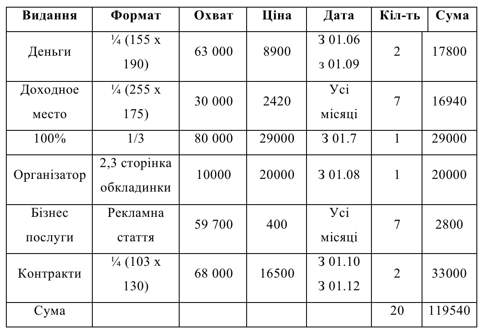
АРКЕТИНГ
КНЕУ
8507-1